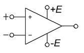
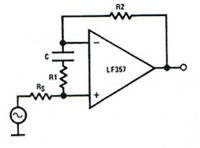

электронный ресурс по учебной дисциплине 1-58 01 01 - "Инженерно-психологическое обеспечение информационных технологий"
|
||
| Оглавление | Программа | Теория | Практика | Контроль знаний | Об авторах | ||
| Практика
ЛАБОРАТОРНАЯ РАБОТА № 2 Входной операционный усилитель на JFET-транзисторах 1. Цель работы Изучить работу операционного усилителя на JFET-транзисторах.
2. Теоретические сведения
В настоящее время одним из основных видов усилителей, применяемых в различных устройствах техники, в том числе и в аппаратуре связи, является операционный усилитель. Операционным усилителем (ОУ) называют усилитель электрических сигналов, предназначенный для выполнения различных операций с входными сигналами при работе со схемой с глубокой отрицательной связью. Первоначально эти усилители предназначались для выполнения различных математических операций сложения, умножения, интегрирования и т. д. Созданные на дискретных элементах ОУ, оказывались очень громоздкими и дорогостоящими, так как для выполнения заданных операций требовались сложнейшие схемы, состоящие из десятков усилительных элементов, диодов, и поэтому такие ОУ применялись довольно редко. Только внедрение ИМС позволило построить на их базе ОУ, обладающие многофункциональными возможностями, малыми габаритными размерами и большой надежностью, простотой в эксплуатации. Операционный усилитель обладает свойствами, наиболее соответствующими основным требованиям к усилительным устройствам: большим коэффициентом усиления, большим входным сопротивлением, малым вводным сопротивлением, широким частотным диапазоном, низким уровнем шума. Идеальный ОУ должен иметь следующие параметры: коэффициент усиления , входное сопротивление , выходное сопротивление , полосу пропускания , уровень шума UШ = 0. Достижение этих показателей и есть основное требование к ОУ. В зависимости от конкретного применения ОУ в реальных устройствах к ним предъявляют и дополнительные требования, связанные со спецификой данного устройства. Следует отметить, что ряд современных ОУ обладает свойствами, близкими к идеальным, но не по всем показателям, так как между выполнением отдельных требований к ОУ существуют противоречия, которые нетрудно понять на основе ранее проведенного анализа работы усилителей на дискретных элементах. Наличие коэффициента усиления создает возможность введения очень глубокой ООС, что позволяет добиться минимальных линейных и нелинейных искажений, стабилизировать параметры ОУ при изменении температуры питающих напряжений. Большое Rвх свидетельствует о том, что практически на входе не потребляется энергии от источника сигнала, что ко ОУ может быть подключен источник сигнала с любым внутренним сопротивлением. Очень малое сопротивление Rвых позволяет подключить к выходу ОУ низкоомную нагрузку, при этом потери мощности на выходном сопротивлении ОУ будут незначительны. Наличие низкого уровня шума означает, что реальная чувствительность ОУ очень велика, что ОУ способен усиливать самые слабые сигналы.

Рис. 1. Условное обозначение ОУ
Условное обозначение ОУ (рис. 1) — треугольник, у которого на стороне основания слева показаны два входа, а справа в вершине ‑ выход. Вход со знаком « + » является неинвертирующим, при подаче входного сигнала на этот вход полярность сигнала на выходе остается той же, что и на входе; вход со знаком «-» ‑ инвертирующий, а при подаче сигнала на этот вход на выходе его полярность меняется на противоположную. На боковых сторонах треугольника, расположены выводы подключения источников питания, кроме того, имеются дополнительные выводы, назначение которых будет также рассмотрено.
2.1. Основные параметры ОУ
Как и все электронные приборы, ОУ характеризуются своими параметрами — основными показателями, по которым выбирают тот или иной прибор для применения в реальной схеме. Параметры различных типов ОУ меняются в довольно широких пределах. Рассмотрим параметры ОУ. Входное сопротивление — дифференциальное сопротивление переменному току на входе ‑ отношение приращения дифференциального входного напряжения к соответствующему приращению тока неинвертирующего входа в режиме короткого замыкания. Идеальное . Реальное Rвх в зависимости от схемы входного каскада ОУ составляет от 4 ... 5 кОм до десятков МОм. Большое Rвх позволяет обеспечить управление усилителем при наименьших затратах мощности источником сигнала и передать на вход ОУ без потерь напряжение источника сигнала. Обычно в ОУ происходит большое подавление синфазной составляющей, и поэтому входное синфазное сопротивление на несколько порядков больше . Средний ток — среднее арифметическое значение постоянных входных токов инвертируемого и неинвертируемого входов в отсутствие сигнала. Обычно не превышает сотен наноампер. Входной
ток сдвига Напряжение смещения ‑ напряжение постоянного тока, которое должно быть приложено к дифференциальному входу ОУ, чтобы его . Обычно составляет не более единиц милливольт. Дрейф
выходного напряжения смещения Выходное сопротивление ‑ внутреннее сопротивление выхода ОУ. Идеальное RBbix±0, при этом все выходное напряжение выделяется без потерь в нагрузке. Реальное составляет единицы и сотни ом. Коэффициент
усиления
‑
отношение изменения к
соответствующему изменению разности входных напряжении при разомкнутой цепи
обратной связи. В идеальных ОУ , в
реальных ОУ К составляет от сотен до сотен тысяч. Так как ограничено
напряжением источника питания, которое обычно не превышает 10... ... 15 В, то
при очень больших коэффициентах усиления Полоса пропускания ‑ полоса частот, в которой уменьшается не менее чем до 0,707 своего максимального значения при неизменной амплитуде на входе. Идеальная полоса пропускания ОУ. Реальная полоса пропускания ограничена. Максимальную частоту полосы пропускания иногда называют частотой среза. Иногда указывается частота единичного усиления , при которой коэффициент усиления уменьшается до 1. Скорость нарастания выходного напряжения ‑ отношение приращения к интервалу времени, за который происходит это приращение, при подаче на вход прямоугольных импульсов. Чем выше частота среза, тем больше скорость нарастания выходного напряжения. Время установления выходного напряжения - время, в течение которого ОУ изменяется от уровня 0,1 до уровня 0,9 установившегося значения при воздействии на вход ОУ прямоугольных импульсов. Время установления также пропорционально частоте среза. Максимальный выходной ток — предельная амплитуда выходного тока, который может быть дан в нагрузку. Максимальная мощность рассеяния — максимально допустимая мощность, которая может быть рассеяна ОУ при наличии входного напряжения и подключенной нагрузке. Типичные характеристики ОУ многокаскадного усилителя постоянного тока представлены на рис. 2, 3.
Рис. 2. Передаточная характеристика ОУ
Передаточная характеристика (рис. 2) смещена в общем случае на напряжение смещения нуля , поэтому даже при отсутствии входного на выходе есть напряжение . Причина смещения нуля ‑ асимметрия усилительных плеч первого каскада ОУ, неточность сдвига уровня, балансировка, асимметрия питающих напряжений, действие синфазного сигнала. Выходные максимальные напряжения , практически равны напряжению питания. Амплитудно-частотная и фазово-частотная характеристики ОУ, снятые в режиме малого сигнала, имеют вид, изображенный на рис. 3. Плавные кривые линии ‑ реальные характеристики, ломаные прямые ‑ их аппроксимации. Наиболее распространенной является аппроксимация частотной характеристики отрезками прямых, наклон которых соответствует , а фазовой ‑ участками, фазовый сдвиг на которых равен , где n=0,1,2... (так называемые диаграммы Боде). Диаграммы Боде соответствуют внутренней структуре частотной и фазовой характеристик многокаскадного ОУ, которые складываются из характеристик отдельных каскадов: , .
Рис. 3. Характеристики ОУ ‑ амплитудно-частотная; фазово-частотная.
Характеристики отдельных каскадов близки к характеристикам эквивалентной RC-цепи: ,
, , где — верхняя граничная частота i-го каскада; ‑ постоянная времени эквивалентной RC-цепи i-го каскада. Таким образом, частоты излома характеристик ОУ соответствуют (примерно) граничным частотам отдельных каскадов. Погрешность аппроксимации не превышает обычно 3дБ для частотной и Т/4 ‑ для фазовой характеристики, что вполне достаточно для практических целей пользования ОУ. Следует иметь в виду, что если граничные частоты отдельных каскадов близки друг к другу, то реальные характеристики не показывают в явном виде изломы, соответствующие аппроксимации по Боде. Параметры амплитудно-частотной и фазово-частотной характеристик:
— частота единичного усиления. Она определяет предельный диапазон частот устройств на ОУ при введении сколь угодно глубокой отрицательной обратной связи; — частота, на которой внутренний фазовый сдвиг в ОУ достигает величины p радиан (1800). При применении ОУ с внешней частотно-независимой отрицательной обратной связью именно на этой частоте возникает самовозбуждение, если на ней петлевое усиление .
2.2. Структура и назначение элементов ОУ
Типовой интегральный операционный усилитель содержит обычно три каскада (рис. 4) — дифференциальный (ДУ), усилитель напряжения (УН) и усилитель мощности (УМ).
Рис. 4. Структура типового ОУ
Первый каскад ОУ обязательно дифференциальный, поскольку это необходимо для уменьшения дрейфа нуля, подавления синфазной помехи, для расширения возможности управления ОУ. В его состав входят усилительные плечи, генератор стабильного тока, цепи термостабилизации, балансировки. Для увеличения входного сопротивления усилительные плечи могут выполняться на составных транзисторах. Каскад усиления напряжения также обычно выполняется по дифференциальной схеме для увеличения степени подавления дрейфа и синфазной помехи. Каскад усиления мощности обычно двухтактный, имеет малое выходное, но большое входное сопротивление (чтобы увеличить эквивалентную нагрузку и коэффициент усиления второго каскада). Во 2-й или 3-й каскад входят также схема сдвига уровня, цепь коррекции для обеспечения устойчивости, элементы защиты от перегрузки. Схема сдвига уровня необходима для того, чтобы при входном напряжении, равном нулю, получить и выходное напряжение постоянного тока, равное нулю. Кроме того, в современных ОУ содержатся многочисленные цепи внутренней обратной связи, термокомпенсации, коррекции, стабилизации. Широкое использование находят операционные усилители, собранные по двухкаскадной схеме. Основное их достоинство ‑ большая устойчивость к самовозбуждению, при этом сохраняются все достоинства трехкаскадного ОУ Уменьшение числа каскадов повышает быстродействие ОУ. В схемах ОУ делается внешний вывод от первого каскада для компенсации напряжения смещения во внешней цепи. В выходных цепях применяют схемы защиты от перегрузок.
2.3. Схема включения ОУ
Для обеспечения нормальной работы ОУ необходимо выполнять правила включения их в схему. ОУ питаются, как правило, от двухполярного источника питания с равными напряжениями (). Причем, если заземляется одна из внутренних точек ОУ, то допустима нестабильность и асимметрия не более 10 %. При включении ОУ без или с неглубокой обратной связью может потребоваться балансировка ОУ.
2.4. Типовые применения ОУ
ОУ с резистивной обратной связью
Внешняя частотно-независимая резистивная обратная связь, охватывающая ОУ, изменяет его коэффициент усиления и полосу частот, не изменяя формы частотной характеристики. Поэтому нередко говорят, что ОУ в этом режиме является «масштабным усилителем». В зависимости от того, на какой вход ОУ подается полезный сигнал, различают инвертирующее, неинвертирующее и дифференциальное включения ОУ. Требования, предъявляемые к параметрам ОУ, зависят от выполняемых функций. В каждом конкретном случае выбирают тот тип ОУ, у которого параметры в наибольшей степени удовлетворяют предъявленным требованиям. В связи с тем что существует определенное противоречие в получении нескольких групп оптимальных параметров ОУ, приходится изготовлять ОУ специального назначения, например, высокочастотные ОУ с широкой полосой пропускания, большой скоростью нарастания выходного напряжения и т. д., но в этом случае трудно получить ОУ с минимальными погрешностями на входе. В других случаях добиваются наибольшей точности параметров. Такие ОУ получили название прецизионных (высокоточных). Таким образом, имеются ОУ общего назначения — универсальные, многофункциональные, которые больше всего применяют в аппаратуре связи, и ОУ частного применения, которые имеют оптимальные значения по какой-то группе параметров.
2.5. Схемы типовых соединений операционного усилителя: операционный усилитель LF155
Операционный усилитель LF155 (отечественный аналог КР140УД22), производимый корпорацией National Semiconductor Corporation, представляет собой широкополосный операционный усилитель с повышенным быстродействием, имеет хорошо согласованную пару JFET-транзисторов на входе, внутреннюю частотную коррекцию и высокую скорость нарастания выходного напряжения. Данные операционные усилители предназначены для построения быстродействующих и точных измерительных систем, систем автоматического регулирования и обработки информации.
2.6. Технические характеристики
Преимущества применения операционного усилителя LF155: 1. Низкая стоимость операционного усилителя (по сравнению с операционными усилителями на гибридных транзисторах) позволяет уменьшить финансовые затраты при производстве оборудования. 2. JFET-транзисторы, используемые в операционном усилителе, сохраняют работоспособность при очень низких температурах, что позволяет создавать сверхмалошумящие усилители. 3. Технология применения JFET-транзисторов на входе операционного усилителя позволяет обеспечить высокое быстродействие, линейность и устойчивость работы. 2.7. Область применения
Совокупность высоких технических характеристик позволяет использовать операционные усилители в качестве интеграторов с большим временем интегрирования и малой погрешностью, в электрометрах и логарифмических усилителях с расширенным диапазоном логарифмирования. Малые значения шумового тока и хорошие спектральные характеристики напряжения шума, высокие динамические параметры, дают преимущества при использовании их в качестве усилителей для высокоомных фотоприемников с режимом преобразования тока в напряжение, схем выборки и хранения, высокоомных буферных каскадах. 2.8. Общие характеристики Таблица 1.Электрические параметры при UП= 15 В, Rн = 2к, Т = 25°C.
Рис. 5. Упрощенная схема 2.9 Параметры операционного усилителя по постоянному току
2.10. Параметры операционного усилителя по переменному току
3.3. Приборы и оборудование
Программа компьютерного моделирование электронных схем Multisim (приборы: функциональный генератор сигналов (Function Generator), осциллограф (Oscilloscope); резисторы; конденсаторы). 4. Порядок выполнения лабораторной работы 4.1. Схема соединений
4.2. Типовые соединения
Задание 1: исследовать схемы типовых соединений операционного усилителя LF155.
4.3. Типовые области применения
Задание 2: исследовать схемы операционного усилителя LF155.
4.4. Выходной сигнал операционного усилителя, Uвых (на основании схемы определения времени нарастания сигнала)
Задание 3: исследовать схемы операционного усилителя LF155.
Рис. 45. Быстродействующий логарифмический преобразователь
Характеристики преобразователя: 1. Динамический диапазон: 100мкА £ Ii £ 1 мА (5 декад), |U0| = 1В/декада 2. Переходная характеристика: 3 мкс для DIi = 1 дек. 3. C1, C2. R2, R3: добавочная динамическая компенсация.
Таблица 2
Рис. 50. Трехдекадный генератор, управляемый напряжением (ГУН)
(3.1)
Указанные R1, R4. Линейность 0,1 %.
Рис. 51. Исключение больших емкостных нагрузок
· отклонение 6 %; · Ts = 10 мкс; · скорость нарастания вых. напряжения Uвых зависит от CL и Iвых max: ( 2)
Рис 52. Пиковый детектор с малым смещением
· диод D3 фиксирует Vвых между Vвх‑VD3, позволяя повысить скорость и ограничить обратное смещение D2. · максимальная входная частота должна быть , где CD2 ‑ шунтирующая ёмкость D2.

Рис 53. Работа с единичным коэффициентом усиления для LF157 ( 3) ; ( 4) ; .
Рис. 58. Инвертирующая работа с единичным коэффициентом усиления для LF157
( 5) ; ( 6) ; .
5. Содержание отчёта
1. Цель лабораторной работы. 2. Исследованные цепи. 3. Результаты исследований; 4. Выводы. 5. Ответы на контрольные вопросы.
6. Контрольные вопросы
1. Что понимается под ОУ? 2. Какие свойства характерны для идеального усилителя? 3. Каковы пути повышения входного сопротивления ОУ? 4. Как добиваются получения минимального выходного сопротивления? 5. Чем ограничивается получение максимального выходного напряжения ОУ?
| |||||||||
| (С) БГУИР |